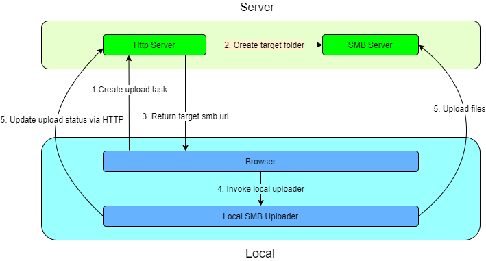
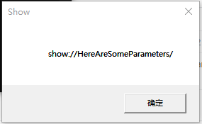
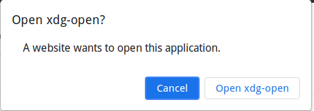
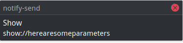

背景
之前遇到这样一个场景：某个Web项目，业务中需要上传特别大的文件(>20G)以及特别多文件的文件夹(>10,000个)。如果选用浏览器直接上传会遇到以下问题：
- 离开页面上传中断
- 出错后无法断点续传
- 无法暂停任务
一旦失败就需要重传，时间成本极高，浏览器直接上传的用户体验极差。这种场景就需要用到本地上传器：由前端唤起一个本地上传程序，将文件拷贝到远端的的SMB服务器中，本地程序通过HTTP接口同步上传状态。上传业务流程是这样的：

本人一个基于此思路的项目：smb-uploader
当本地程序启动后，可以启动一个本地HTTP服务和前端通信。但是第一次启动则需要浏览器主动唤起，曾经IE使用ActiveX空间可以调用本地程序，但也带来了安全性问题，而如今ActiveX已经被主流浏览器停止支持。浏览器唤起本地程序如今已有了统一的方案。
Windows
Windows下可以使用注册协议(Register Protocol)来实现浏览器唤起本地程序。注册协议是一种用于通过链接发送，接收和处理信息的方法，浏览器可以处理的常见协议包括http，https，ftp 和 mailto。为了实现查看通过特定协议发送的信息，这种协议必须注册在注册表中注册，常见的我们可以通过点击一个邮件地址调起第三方邮件客户端。协议被注册后，该网址就可以由指定的程序（浏览器或第三方查看器）进行处理。例如：mailto://abc@http://xyz.com。可以使用注册了协议 mailto 的邮件客户端新建一封收件人地址为 abc@xyz.com 的邮件。同理我们可以利用这种方式实现在浏览器中页面调起本地程序。
先用Go写一个简单的窗体程序，他会将第二个命令行参数在消息框中展示：package main
import (
"github.com/lxn/walk"
_ "github.com/lxn/walk/declarative"
"os"
)
func main() {
walk.MsgBox(nil, "Show", os.Args[1], walk.MsgBoxUserIcon)
}
编译后命名为show.exe，在C:\Program Files下创建一个ShowDemo文件夹，将show.exe至于其中。接下来让浏览器通过URL唤起C:\Program Files\ShowDemo\show.exe，需要在注册表中加入相应配置：
创建注册表文件setup.reg并执行：Windows Registry Editor Version 5.00
[HKEY_CLASSES_ROOT\Show]
@="URL:Show Protocol Handler"
"URL Protocol"=""
[HKEY_CLASSES_ROOT\Show\shell]
[HKEY_CLASSES_ROOT\Show\shell\open]
[HKEY_CLASSES_ROOT\Show\shell\open\command]
@="\"C:\\Program Files\\ShowDemo\\show.exe\" \"%1\""
其中Show是自定义协议名，C:\Program Files\ShowDemo\show.exe是目标可执行程序，%1是命令行参数序号。协议头不区分大小写，当访问show://xxx的时候，会适配这条规则，调用C:\Program Files\ShowDemo\show.exe程序，并将show://xxx作为第二个参数传给show.exe
在浏览器中访问smb://HereAreSomeParameters，可以看到成功唤起了show.exe：

Linux
KDE
在/home/xuranus/workspace/ShowDemo下创建show脚本，他用于在提示框中展示第一个命令行参数。
|
- 在
~/.local/share/applications下新建一个show.desktop，内容如下：
[Desktop Entry] |
执行：update-desktop-database
- 注册
show协议：xdg-mime default show.desktop x-scheme-handler/show
在浏览器中访问smb://HereAreSomeParameters或用xdg-open smb://HereAreSomeParameters测试：


Gnome
gconftool-2 -t string -s /desktop/gnome/url-handlers/show/command 'show "%s"' |